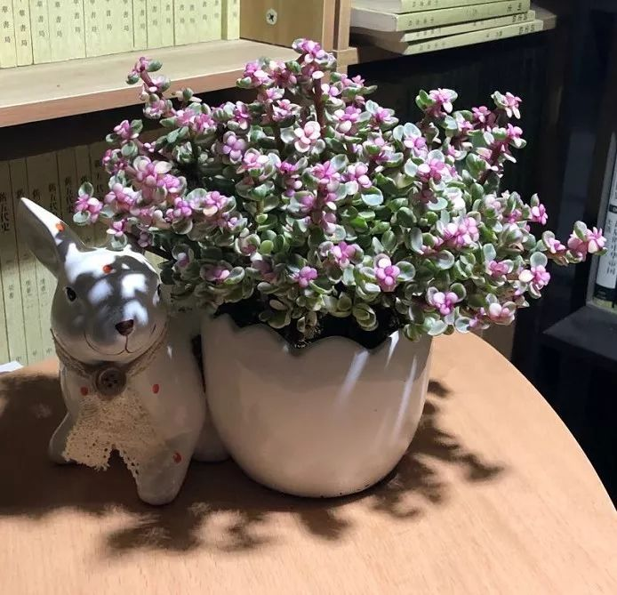

武汉抗疫护士：今天最高兴的是终于痛快洗了一把脸
原文链接 备份链接 澎湃新闻记者 韩雨亭 通讯员 李俊平 2月15日，武汉市汉口医院120急救站护士彭璟在一线抗疫已经30天，今天让她最高兴的一件事情是——“我终于痛痛快快地洗了一把脸。” 作为急诊室护士，30天来，她一直坚守在抗疫一线， …


她说，年后房价肯定还有一轮上涨，现在买房子的人都是来“捡漏”的，卖房子的人都是“苕”。

配图 | Sipa图片社


8年前，我和刘辉在一次校友聚会上结识，后来关系一直处得不错。他是湖北孝感人，大学毕业后留在武汉工作，妻子潘文在一家国企上班，儿子已经4岁多了。
去年6月份的一天，刘辉说他打算买房，想找人咨询一下武汉楼市状况，便拜托我约一位在房地产公司上班的同学一起吃了个晚饭。
酒足饭饱后，刘辉夫妇开车送我回家。路上，潘文问我近期有没有关注附近XX楼盘的价格，我说，只是偶尔路过时看到楼已经盖好，大幅广告就挂在外面，听说卖得挺火爆，摇号还要交“茶水费”。
潘文点点头，伸出3根手指，“开盘价已经接近3万了，你还不打算买房？”
我摇摇头，说武汉限购，我户口不在这儿，没有资格。
“你赶紧想办法把户口弄过来吧，眼瞅着未来房价又要涨。” 刘辉又提醒我。

那天之后，刘辉夫妇便开始在武汉各处看房，期间还拉我去做过几次“司机”。
我记得他们在汉口有一套80平米左右的商品房，才住了没几年，就问他为何又要买房。他就说儿子快到上学年龄了，结婚时在汉口买的那套房面积有些小，学区也不好，想在武昌找一套好的学区房。
在武汉一年中最炎热的季节，我开车带着他们两口子跑了很多楼盘，足迹遍布武汉三镇。有一次，我实在忍不住问他：“又不是没房住，干嘛非赶这大热天出来看房？”刘辉一边擦着脸上的汗一边跟我说，他也不想冒着酷暑出来跑，但过不多久武汉房价就会猛涨，“现在不买，以后更买不起了”。
彼时，坊间确实流传着武汉房价将会暴涨的消息。原因是10月中旬，武汉将承办第七届夏季军人运动会，市政府为此更新了大量的城市设施，兴建了一批举世瞩目的工程，让整个城市面貌焕然一新。
大家按照2008年奥运会和2010年亚运会后，北京和广州两座承办城市房价的涨幅比例推断，军运会之后，武汉房价肯定会迎来新一轮暴涨。
刘辉手里有一笔存款，加上各种房价上涨的消息乱飞，着实让他跃跃欲试。刘辉告诉我，2015年下半年，自己就没把握住武汉房价暴涨的机会，“这次说什么也不能再吃亏了”。
加上身边的同事和亲友们也大多在商量买房的事情，还有好几个同事已经借款买了新房，没买的也在利用周末时间四处看房，刘辉一心觉得，若是耽误了这波行情，真的是平白无故损失了一大笔钱。
我也很是理解，那段时间，自己手机里也经常收到各处房产开发商的广告消息，连一些三环之外的楼盘，营销顾问预测的单价都要接近每平米2万元了。
“你看南京的房价，再看武汉的房价，明显低一截，说明还有上涨的空间，这次军运会，恐怕就是武汉追平南京的最后节点了。”潘文也跟着刘辉一起劝我，想一想的确不无道理。

8月中旬，刘辉再次约我吃饭，席间又问我“买不买房”。
我也很无奈，不是不想买，实在是没有本地户口买不了。没想到听我这么说，刘辉似乎还有些高兴，接着问我，既然我近期不买房，能不能借他些钱用。
“你们不是已经准备好买房的钱了吗，怎么又要借钱？”
刘辉赶忙解释说，潘文看中了一套武昌的二手房，面积比较大，180平米，总价接近400万，因为这算“二套房”，按照政策，首付需要缴230万左右，手头的钱就不够了。他们本来也没打算买这么大的房子，但第一次跟房产中介上门看房，便一下喜欢上了这套——无论房型、地段、学区还是小区配套设施，都很合潘文的心意。而且房主出国急卖，价格还略低于市场价——刘辉这段时间实在看房看烦了，干脆决定咬咬牙买下来算了。
可家里存款只有80多万，首付缺口很大，问了一圈，身边有经济实力的亲戚朋友大多也都在张罗着买房，于是只能找到我。
为了让我放心，刘辉又解释说，自己父母在孝感老家有一家工厂，效益很好，眼下只是一时半会拿不出这么多现金，“（借）80万，1年，我们按照银行定期利率的3倍付你利息……”
我摇摇头，说自己手上也没那么多钱。
“40万，半年，3倍利率……”刘辉把金额和时间各压缩了一半，但利息没变。
我还是摇头——不是不想帮忙，而是手里真的一下拿不出这么多钱。想了想，我决定实话实说——40万确实有些困难，但5、6万还是可以的。也不需要付什么利息，用的话，我马上转账。
我本想多说两句，劝他不要着急买这么贵的房子，毕竟首付之后还有每月贷款，压力太大，但听到我也拿不出那么多钱，刘辉脸上明显有些失望，随即就结束了借钱的话题，我也不好多说。
之后很长一段时间，刘辉都再没跟我提过钱的事情。本以为他们两口子就此放弃了，但不久后，我在潘文的朋友圈里看到了他们的新房照片，从定位看，正是那套180平的大房子。
朋友圈下面全是共同好友们羡慕的点赞和留言，我问刘辉：“搞定了？”刘辉显得十分激动，说搞定了，“太喜欢这套房子了，老婆还说房子够大了，可以准备生二胎了！”

刘辉的父母是在上世纪90年代初开始在老家经商的，潘文的娘家经济状况也不错。两人结婚后就定居在武汉，2013年全款买下了汉口的那套商品房。
我问刘辉，汉口那套房子怎么处置？刘辉说准备卖掉了，买新房借了不少钱，需要用第一套房子的卖房款还账。他又拜托我帮他发发广告，如果身边有想在汉口买房的朋友可以联系他。
之后的一段时间，我们便各忙各的事，没怎么再聊起房子了。我也在朋友圈里帮他发了广告，期间有联系我问房子情况的人，我都转给了刘辉。但那套房子刘辉却一直都没出手，偶尔聊起，只说自己在忙着装修新买的房子。
刘辉在汉口的那套房子的确很抢手，无论房型、位置还是面积都十分符合市场需求。刘辉说他们8月份就把房子挂上了房产中介的网站，马上就有人联系他们约看房时间了。
9月份，有位之前通过我联系过刘辉的朋友抱怨说：“这两口子太不地道了。”我问原因，他就说之前谈好170万，各方面都准备好了，交定金那天刘辉却突然反悔了，说不卖了。这种临时“放鸽子”的行径令他十分生气，还顺带着埋怨起我，让我以后别再给他介绍这种“不靠谱的家伙”了。
我转头打电话问刘辉怎么回事。刘辉却无奈地说，交定金前“放鸽子”是潘文的意思——来看房的人很多，潘文感觉肯定是之前的价格要低了，非说等到军运会之后看行情再卖。我也有点不开心，说如果这样的话就不帮你们发广告了，不然弄得我也不好做人。刘辉叹了口气，没再说别的。
转眼就到了年底，一次吃饭时，大家又聊起房子的事情。潘文就立刻感慨说，这年头投资什么都不如投资房子，现在汉口那套房的挂牌价已经涨到200万了，他们当初买时只花了100来万，价值几乎翻了一番。
我有意揶揄了她一句，笑着说：“这样的话，你干脆别卖了，看这架势，以后还得涨，留个十年八年，估计能涨到上千万，可别便宜了别人。”
潘文大概没听懂我话里的嘲讽，竟点点头表示同意。刘辉就转过头来，抱歉地冲我笑笑，说：“还是卖了吧，新房那边借了太多钱，压力太大。”又补充说，他已经通过房产中介找到了买主，对方来看过几次房子，准备下定金了。
潘文脸上就有些不快，白了刘辉一眼，说自己听闺蜜们讲，年后武汉房价肯定还有一轮上涨，现在买房子的人都是来“捡漏”的，卖房子的人都是“苕”（方言：傻瓜）。之后又举出几个同事和朋友买房的例子，正说得带劲，刘辉却突然粗暴地打断了她——刘辉声音很大，也吓了我一跳。
我诧异地看着他，刘辉却只是摆摆手，说不要聊房子的事情了。之后，刘辉就全程黑着脸，无论和他聊什么，都只是哼哼哈哈地应付过去。

1月17日，春节前最后一次见刘辉。那天他来光谷看家具，中午约我一起吃饭。
话题又到了房子上面。刘辉说，汉口的房子卖掉了，200万多一点，对方前几天已经交了定金。我赶忙向他表示祝贺，问他这笔钱打算如何“潇洒”一下。他就说，还完二套房借款剩下的部分，准备买点好家具，毕竟买完这套房子，10年内不打算再换了。
刘辉又让我代他向之前那位被潘文“放鸽子”的朋友致歉，我便打着哈哈说，这种事也不能全怪潘文，毕竟两次价格相差30几万，不是一个小数目，彼此之间都可以理解。
那天刘辉情绪很好，跟我聊了很多关于房子的事情，临分别时还约我春节收假后去参观他的新家。我开玩笑问他，乔迁新居还要不要我随份子？刘辉哈哈笑着说不用，到时他就在家炒几个菜，我们一起喝两杯。
1月23日，武汉封城。当时我已经返回老家过年，听到消息后赶紧给刘辉打电话询问情况。他们一家人还住在汉口的老房子里，距离新闻上说的“新冠病毒”发源地华南海鲜市场不远。刘辉说家人身体还好，请我放心。大家聊了几句疫情的事，便挂了电话。
1月29日正月初五，我刷微信时，突然发现刘辉和潘文都在朋友圈发出了卖房广告——就是汉口那套老房子——我当时有些诧异，刘辉不是说已经和别人签了合同吗？
发信息问他房子的事情，他没有回。
等到2月4日中午，我才接到刘辉电话，一上来就问我之前那个联系他买房的朋友还要不要了。我说，人家之前被你放了鸽子，现在我怎么好意思再去问？刘辉沉默了一会儿，拜托我一定再帮忙去问问，他就按照之前170万的价格卖房。
我很吃惊，问他什么情况。刘辉说，之前那个合同黄了，他现在急需把房子卖掉拿钱出来，不然年后就麻烦了……
我这才知道，原来他们买第二套房时实在借不到钱，他便将父亲在老家的工厂厂房抵押给了贷款公司，拿到140万，这才付了第二套房的首付。他本来打算把汉口的房子卖掉之后，立刻把钱还给贷款公司赎回厂房，没想到临到还款关头“出事了”。
我十分不解，印象中刘辉父母的工厂价值远不止140万。刘辉便解释说，贷款公司的业务经理是潘文的中学同学，当时建议他们将厂房低价抵押，这样一来可以把贷款利息谈得低一些，二来放款速度快，手续办完当天就能出款。
刘辉父亲这些年也用过类似办法筹措资金，出于对同学的信任，刘辉夫妇便同意了。他们原本打算通过“时间差”，以最小的成本解决二套房的首付资金，但现在汉口那套房子却出了问题。
军运会前，有七八位买家找他们夫妇看过房，但两人一直没有下决心卖。潘文觉得所有的消息都说军运会后房价要暴涨，来看房的人越多，她越不想卖，觉得那些人都是想捡“军运会前”这个漏。
刘辉也曾提醒过妻子，厂房的抵押合同只签了半年，2月中旬就要还款了，二手房交易也需要时间，但潘文还是想再等等，非说那套房子不愁卖，能多赚点就多赚点，“谁也不嫌钱咬手”。
刘辉没法再坚持，毕竟父亲厂子那边正在谈一笔生意，年前就有定金要到账，初八还有一笔预付款，这两笔钱加起来也应该足够赎回厂房的。因此，直到2020年1月上旬跟我吃饭之前，他们才把卖房的事情敲定。
买家姓赵，也在那套房子附近住，想给从外地来武汉养老的父母买套房子。老赵春节前去刘辉家看过4次，最后一次是11号——那天老赵直接带了装修公司“看现场”，第二天便和刘辉签了购房合同，付了17万定金。
之后的一周，因为刘辉被单位派去外地出差，双方便约好20号一起去办手续。可20号一早，刘辉接到老赵的电话，说家里出了点情况，购房手续的事情得“往后延几天”。
再过几天就要过年了，刘辉有些着急，可老赵那边说，父母都病倒了，自己也感觉身体不太舒服，正忙着带一家人去看病，暂时没有功夫去搞房子的事情。听老赵这么说，刘辉也不好再坚持。
“后来他家确诊了3例肺炎，现在我也不知道那天没跟他去办手续到底是福还是祸……”刘辉说。

“老赵只是说往后延几天，没说不买，你现在找新买家合适吗？”我问刘辉。
刘辉赶紧解释说，之前的合同已经作废了。
两天之前，老赵的妻子联系潘文，要求解除购房合同，自己家中有3人感染了，老赵父母已被送往医院救治，老赵本人则被隔离观察，买房的事情要往后拖一下。电话里，老赵妻子一再向潘文夫妇道歉，说自己不是有意爽约，真的是家里出了事，她还向刘辉夫妇提出了“退房”诉求。即便不退，也希望刘辉夫妇念在她家现在这种情况，能够延长付款时间。为了让刘辉夫妇相信她说的话，老赵妻子把定点医院给老赵父母以及老赵本人开具的诊断书和CT照片都发给了潘文。
刘辉两口子一下就懵了。
“合同虽然没有注明买房因重大疾病有权解除合同，但却有一条叫‘不可抗力’，他们说现在疫情就是‘不可抗力’，希望我能体谅一下他们家现在的情况……”刘辉说。他原本还不知道这是不是真的属于“不可抗力因素”，咨询了房产中介，中介那边也拿不定主意，建议他们先跟老赵妻子协商，万一协商不成的话，再通过诉讼方式解决。
刘辉和潘文商量再三，实在不想因为此事跟老赵一家对簿公堂，一来买房卖房对双方本是一件皆大欢喜的事情，他们也不想把喜事办成愁事；二来在这关口上还逼迫人家，确实有些不近情理；三来即便为此打了官司，等判决结果下来也早就耽误了贷款公司那边的还款时间，有这功夫，还不如想想其他办法。
刘辉和老赵妻子随即解除了购房合同，退还了定金，再打电话联系房产中介，想打听一下还有没有其他买家时，房产中介却说，“这关口，大家都想着保命要紧，哪个还有心思考虑房子的事情？”
可刘辉却不能不考虑房子的事情。他赶忙让潘文打电话给当初帮忙贷款的中学同学，问他贷款公司那边能不能给自己做一下延期，毕竟现在疫情这么严重，连银行都放出消息可以延迟归还购房贷款，希望贷款公司那边也能够照顾一下自己的情况。
不久之后，同学回复他们说，公司拒绝了贷款的延期申请，理由是合同中没有标明疫情“属于延期还款的不可抗力因素”，银行延期是银行的事情，他们的贷款不能延期，届时不还只能算“逾期”。
我只能劝刘辉不要着急。眼下即便抵押贷款“逾期”，对方顶多上涨一部分贷款利率作为“罚息”。按照之前他们签订贷款合同时约定的利率，这部分“罚息”数额也不会太大，就当自己损失一点房价算了。
但刘辉却更着急了，说当时自己着急借钱，根本没想着自己真的会逾期，只关注了贷款利率却没有仔细看“逾期责任”，现在转过头来再看合同，才发现“逾期罚息”这块竟然高得离谱——“每天2‰的罚息，按照140万贷款算，光是罚息一天就要交2800，这谁能承受得起！”而且，即便交了高额罚息，过后3个月还不上全款，对方还是要收走厂房。
同学也给潘文“露了底”，他说贷款公司出借的这笔钱不是公司的钱，而是从其他地方拆借过来的，公司只是从中赚个差价。真正的金主不肯展期，贷款公司也没有办法。他之前通过贷款公司跟金主协调过，金主得知情况后，坚持“还不上贷款的话就收厂房”。
“我现在才知道，那家贷款公司不怎么正规，很多东西都跟正常贷款机构不一样，都怪我当时急赶着借钱，为了把利息谈得低一些，答应了一些很苛刻的条件，但当时谁想着会遇到这种情况！”刘辉越说越生气。
“预付款呢？之前不是说春节前后会有一笔预付款到账，可以用来顶一下吗？”我接着问刘辉。
一声长长的叹息就从电话那头传来。
刘辉说，眼下整个湖北都处于封闭状态，孝感也紧随武汉封了城，工厂也早已停了工，不知什么时候才能复工。就算之后工厂开了工，还不晓得工人们能不能按时回来，真正恢复生产，还不知到了什么时候。
他父亲跟合作方好话说尽，希望对方能够看在受疫情影响的份上宽限一些时日——这不仅是预付款的问题，去年年底，为了拿下这笔订单，厂子更新了设备，采购了原料，花销也不是小数目，如果取消订单，厂子着实难以承担这笔经济损失。
但合作方那边也有苦衷，坚决不肯等，给了刘辉父亲两个选择：要么取消合同，退还之前的定金，以后有机会再合作；要么合作方按照合同约定支付预付金，双方继续合作，但如果厂子后期不能按期交货，则要按照合同约定赔偿合作方损失。
“现在这情景怎么开工？谁敢来开工？延误交货是肯定的，继续履行合同的话，之后怕是不但赚不到钱，反而要赔给合作方一大笔钱……”刘辉说，他父亲甚至为此找了当地县政府帮忙，县政府也派人跟合作方做了协调，但无奈对方死活不肯松口，最终双方只好一拍两散。
抵押贷款无法延期，预付款的希望灰飞烟灭，刘辉夫妇只好再从汉口那套房子身上下功夫。两人又联系了一些之前来看过房子的客户，但大家纷纷表示“情况有变”。说话委婉一些的，告诉潘文目前武汉封城，相关部门都没上班，等“疫情过去了再说”；说话直白些的，直接告诉潘文，那套房子位于武汉爆发“新冠肺炎”的核心地带，他“不敢买”。
情急之下，刘辉甚至跟对方开出了“全款购买降价15万”的条件，但对方依旧不同意。倒是有了解情况的房产中介工作人员私下联系刘辉，提出可以用挂牌价70%的价格帮忙“内部消化”一下，如果他同意，马上可以拿钱，只需在线签个协议，手续等到疫情过去之后再办。
刘辉觉得对方明显是在“趁火打劫”，便没有答应。
“现在又有消息说，之后武汉的房价很可能要大跌，现在买太不划算，所以大家又开始观望了……”最后，刘辉又叹了口气。
挂了电话，我急忙联系之前那位找我咨询买房的朋友，把刘辉家的情况跟他简要说了，又把“原价170万就卖”的话转达了，但那位朋友说，目前自己回不了武汉，也没有心思再考虑买房的事情，即便要买，也要等到疫情过去之后再说。我只好把情况反馈给了刘辉。
尾声
2月14日中午，刘辉给我打电话，说要借钱。我问他要多少，他说看在朋友一场的份上，能给凑多少就给他凑多少吧，他实在是没有办法了。
我翻遍身上所有银行卡，能够借给他的也只有不到7万块，又向朋友开口，勉强给他凑够了10万。虽然距他的需要还差十万八千里，但这也是我能提供的最大帮助了。
我问刘辉下一步怎么办，刘辉的情绪很低落，他说现在手头借了大概四五十万，其余的还在想办法。他又拜托我帮他查了一下抵押贷款逾期之后的责任问题，方便的话帮他找个律师，看能否在“疫情”上面找找出路，毕竟老家那套厂房价值至少在两三百万左右，是父母大半辈子的心血，以后还指望工厂养老呢，真要140万被别人拿走，他真的无法接受。
“实在不行，也只能让之前那个房产中介‘内部消化’了，至于损失，就当是这几年白干了吧”。
电话里，刘辉又对妻子之前一直等“军运会后房价大涨”而不赶紧卖房筹钱的做法颇有抱怨，我劝他别怪潘文了，她那样做也是为了多赚点钱，谁也想不到突然遇到大事，现在你俩还是先想办法筹钱，其他事情以后再说吧。
编辑 | 许智博
李 承 谟
光谷游民

本文系网易新闻人间工作室独家约稿，并享有独家版权。如需转载请在后台回复【转载】。
投稿给“人间-非虚构”写作平台，可致信：thelivings@vip.163.com，稿件一经刊用，将根据文章质量，提供千字500元-1000元的稿酬。
投稿文章需保证内容及全部内容信息（包括但不限于人物关系、事件经过、细节发展等所有元素）的真实性，保证作品不存在任何虚构内容。
其它合作、建议、故事线索，欢迎于微信后台（或邮件）联系我们。


点击以下「关键词」，查看往期内容：
群聊魔鬼 | 月嫂回忆录 |家暴 | 健身房的坑 | 生子丸
考公| 萌宠博主 | 82年的金智英 | 女大学生的毒虫男友
大牛失业 | 卧底狱警 | 娶妻改命 | 中年男人的窝囊死亡
职校老师 | 产科记事 | 改嫁 | 寻业中国 | 三大队 | 股市梦碎
扶弟魔 | 末路狂花 | 下乡扶贫| 外卖小哥 | 杀死我的女神
东北相亲 | 我放弃了科研 | 网红女同学 |与巨婴离婚的女人

文章已于修改
原文链接 备份链接 澎湃新闻记者 韩雨亭 通讯员 李俊平 2月15日，武汉市汉口医院120急救站护士彭璟在一线抗疫已经30天，今天让她最高兴的一件事情是——“我终于痛痛快快地洗了一把脸。” 作为急诊室护士，30天来，她一直坚守在抗疫一线， …
原文链接 备份链接 本文故事来自一名化名为“平安”的武汉大学生，记述了她从返乡、封城，再到过年所经历的种种。这个特殊的春节，焦虑与希望同在，寂静与喧嚣并存。身处「风暴中心」，从慌乱到乐观，她的心理发生了什么样的变化？让我们一起来看看她过去 …
原文链接 备份链接 编者按 这篇约稿来自一名化名为“平安”的武汉大学生，记述了她从返乡、封城，再到过年所经历的种种。这个特殊的春节，绝望与希望同在，寂静与喧嚣并存。身处「风暴中心」，她的心理有什么样的变化？让我们一起来看看她的五日。 “ …
原文链接 备份链接 从火车站回来的路变成三个人，车还很少，我们一路畅行。丁刚把汽车音响声音放到最大，是伍佰的《被动》，“爱你越久我越被动……” 文 | 萧辉 2020年1月23日凌晨1点42分，我在微信朋友圈里写了一句“OH, MY …
原文链接 备份链接 昨天写了《自我隔离，静待春天》，发现大家各种迫切希望了解武汉的情况，所以我决定如无意外，每天都会在公众号给大家写点啥，一来给所有在武汉和在湖北，受到疫情影响的朋友们鼓鼓劲儿，二来也给外省的朋友们报个平安，让大家管中窥 …